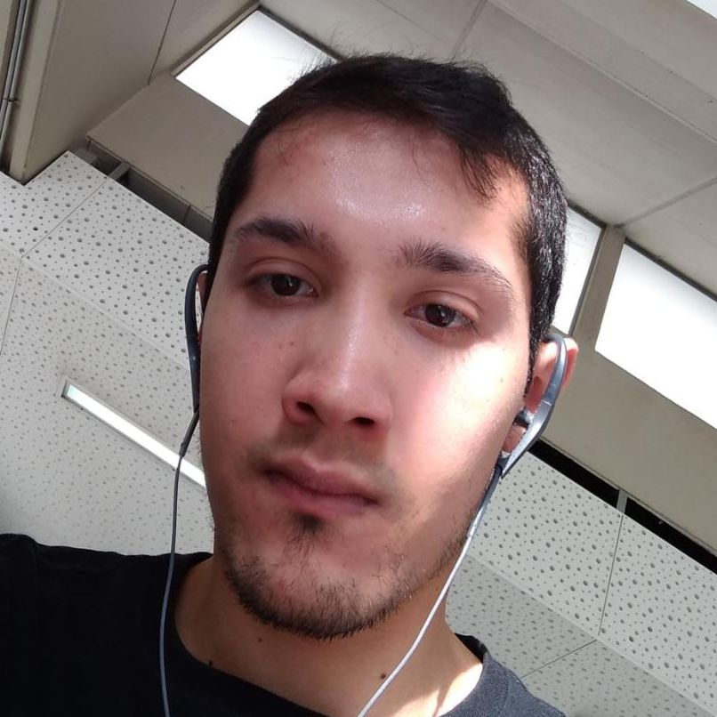

Nuestro equipo de trabajo

Juan David Avalos
Ingeniero de Petróleos de 29 años de edad. Reparte su afición entre el fútbol y los videojuegos. Felizmente casado.

José Bernardo Pérez
Administrador de un taller de taxímetros, con 45 años de edad, su mayor afición es saber cómo funcionan las cosas, tiene una hija una gata y muchos peces.

Juan Pablo Bermúdez
Economista de la Universidad Nacional. Me gusta Radiohead, Steven Wilson y el Techno. Suelo hacer ejercicio o trotar cuando el clima es favorable y a veces juego lol. Tengo dos gatos.

Diego Mauricio Sánchez
Ingeniero de sistemas de la Universidad Distrital, de 41 años de edad. Aficionado al ajedrez y a los RPG. Papá de Juandi y de dos gatos.

Joan Esneider Duque
Estudiante de Ingeniería Mecánica de la Universidad de Antioquia actualmente en noveno semestre, el poco tiempo libre que me queda lo comparto con mi hija.